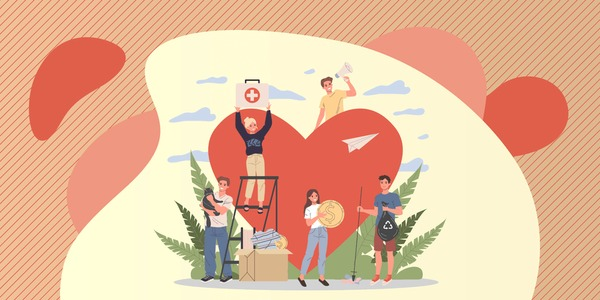
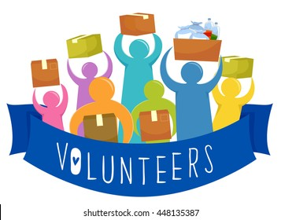

Our Mission
Our mission is to enhance community well-being by providing accessible and nutritious food services to all. We strive to build a healthier, more equitable community through sustainable practices and collaboration.

Programs and Services

Community Outreach
We organize community events to raise awareness about food access and nutrition. These events include food drives, cooking classes, and informational sessions.

Nutrition Assistance
Our nutrition assistance programs provide food vouchers and support to families in need, ensuring they have access to healthy and affordable options.
Get Involved
Your support makes a difference! Join us in our efforts to improve community food services by volunteering, donating, or partnering with us. Together, we can create a healthier future for everyone.
